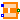
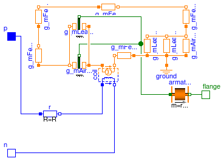
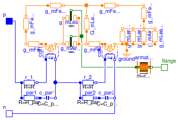

| Name | Description |
|---|---|
|  SimpleSolenoid | Simple network model of a lifting magnet with planar armature end face |
| Advanced network model of a lifting magnet with planar armature end face, split magnetomotive force |
 Modelica.Magnetic.FluxTubes.Examples.SolenoidActuator.Components.SimpleSolenoid
Modelica.Magnetic.FluxTubes.Examples.SolenoidActuator.Components.SimpleSolenoid
Please refer to the Parameters section for a schematic drawing of this axisymmetric lifting magnet. In the half-section below, the flux tube elements of the actuator's magnetic circuit are superimposed on a field plot obtained with FEA. The magnetomotive force imposed by the coil is modelled as one lumped element. As a result, the radial leakage flux between armature and yoke that occurs especially at large working air gaps can not be considered properly. This leads to a a higher total reluctance and lower inductance respectively compared to FEA for large working air gaps (i.e. armature close to x_max). Please have a look at the comments associated with the individual model components for a short explanation of their purpose in the model.

The coupling coefficient c_coupl in the coil is set to 1 in this example, since leakage flux is accounted for explicitly with the flux tube element G_mLeakWork. Although this leakage model is rather simple, it describes the reluctance force due to the leakage field sufficiently, especially at large air gaps. With decreasing air gap length, the influence of the leakage flux on the actuator's net reluctance force decreases due to the increasing influence of the main working air gap G_mAirWork.
During model-based actuator design, the radii and lengths of the flux tube elements (and hence their cross-sectional areas and flux densities) should be assigned with parametric equations so that common design rules are met (e.g. allowed flux density in ferromagnetic parts, allowed current density and required cross-sectional area of winding). For simplicity, those equations are omitted in the example. Instead, the found values are assigned to the model elements directly.
| Type | Name | Default | Description |
|---|---|---|---|
| Resistance | R | 10 | Armature coil resistance [Ohm] |
| Real | N | 957 | Number of turns |
| Radius | r_yokeOut | 15e-3 | Outer yoke radius [m] |
| Radius | r_yokeIn | 13.5e-3 | Inner yoke radius [m] |
| Length | l_yoke | 35e-3 | Axial yoke length [m] |
| Length | t_yokeBot | 3.5e-3 | Axial thickness of yoke bottom [m] |
| Length | l_pole | 6.5e-3 | Axial length of pole [m] |
| Length | t_poleBot | 3.5e-3 | Axial thickness of bottom at pole side [m] |
| Length | t_airPar | 0.65e-3 | Radial thickness of parasitic air gap due to slide guiding [m] |
 | |||
| Material | |||
| BaseData | material | Modelica.Magnetic.FluxTubes.... | Ferromagnetic material characteristics |
| Armature and stopper | |||
| Radius | r_arm | 5e-3 | Armature radius = pole radius [m] |
| Length | l_arm | 26e-3 | Armature length [m] |
| TranslationalSpringConstant | c | 1e11 | Spring stiffness between impact partners [N/m] |
| TranslationalDampingConstant | d | 400 | Damping coefficient between impact partners [N.s/m] |
| Position | x_min | 0.25e-3 | Stopper at minimum armature position [m] |
| Position | x_max | 5e-3 | Stopper at maximum armature position [m] |
| Type | Name | Description |
|---|---|---|
| PositivePin | p | Electrical connector |
| NegativePin | n | Electrical connector |
| Flange_b | flange | Flange of component |
model SimpleSolenoid
"Simple network model of a lifting magnet with planar armature end face"
parameter SI.Resistance R = 10 "Armature coil resistance";
parameter Real N = 957 "Number of turns";
//yoke
parameter SI.Radius r_yokeOut = 15e-3 "Outer yoke radius";
parameter SI.Radius r_yokeIn = 13.5e-3 "Inner yoke radius";
parameter SI.Length l_yoke = 35e-3 "Axial yoke length";
parameter SI.Length t_yokeBot = 3.5e-3 "Axial thickness of yoke bottom";
//pole
parameter SI.Length l_pole = 6.5e-3 "Axial length of pole";
parameter SI.Length t_poleBot = 3.5e-3
"Axial thickness of bottom at pole side";
parameter SI.Length t_airPar = 0.65e-3
"Radial thickness of parasitic air gap due to slide guiding";
parameter Modelica.Magnetic.FluxTubes.Material.SoftMagnetic.BaseData material
=
Modelica.Magnetic.FluxTubes.Material.SoftMagnetic.Steel.Steel_9SMnPb28()
"Ferromagnetic material characteristics";
//armature
parameter SI.Radius r_arm = 5e-3 "Armature radius = pole radius";
parameter SI.Length l_arm = 26e-3 "Armature length";
parameter Modelica.SIunits.TranslationalSpringConstant c=
1e11 "Spring stiffness between impact partners";
parameter Modelica.SIunits.TranslationalDampingConstant d=
400 "Damping coefficient between impact partners";
parameter SI.Position x_min = 0.25e-3 "Stopper at minimum armature position";
parameter SI.Position x_max = 5e-3 "Stopper at maximum armature position";
SI.Position x(start=x_max, stateSelect=StateSelect.prefer)
"Armature position, alias for flange position (identical with length of working air gap)";
protected
parameter SI.Density rho_steel = 7853
"Density for calculation of armature mass from geometry";
public
Modelica.Magnetic.FluxTubes.Basic.Ground ground;
Modelica.Magnetic.FluxTubes.Basic.ElectroMagneticConverter coil(
final N=N, i(fixed=true))
"Electro-magnetic converter";
Modelica.Electrical.Analog.Basic.Resistor r(final R=R) "Coil resistance";
Modelica.Magnetic.FluxTubes.Shapes.FixedShape.HollowCylinderAxialFlux
g_mFeYokeSide(
final nonLinearPermeability=true,
final material=material,
final l=l_yoke - (t_poleBot + t_yokeBot)/2,
final r_i=r_yokeIn,
final r_o=r_yokeOut)
"Permeance of of hollow cylindric section of ferromagnetic yoke";
Modelica.Magnetic.FluxTubes.Shapes.FixedShape.HollowCylinderAxialFlux
g_mFeArm(
final nonLinearPermeability=true,
final material=material,
final l=l_yoke - (t_yokeBot + t_poleBot)/2 - l_pole - (x_max +
x_min)/2,
final r_i=0,
final r_o=r_arm) "Permeance of ferfomagnetic armature";
Modelica.Magnetic.FluxTubes.Shapes.Force.HollowCylinderAxialFlux g_mAirWork(
final mu_r=1,
final dlBydx=1,
final r_i=0,
final r_o=r_arm,
final useSupport=false,
final l=flange.s)
"Permeance of working air gap (between armature and pole end faces)";
Modelica.Magnetic.FluxTubes.Shapes.FixedShape.HollowCylinderRadialFlux
g_mFeYokeBot(
final nonLinearPermeability=true,
final material=material,
final l=t_yokeBot,
final r_i=r_arm + t_airPar,
final r_o=r_yokeIn) "Permeance of bottom side of ferromagnetic yoke";
Modelica.Magnetic.FluxTubes.Shapes.FixedShape.HollowCylinderRadialFlux
g_mAirPar(
final nonLinearPermeability=false,
final mu_rConst=1,
final l=t_yokeBot,
final r_i=r_arm,
final r_o=r_arm + t_airPar)
"Permeance of parasitic radial air gap due to slide guiding";
Modelica.Magnetic.FluxTubes.Shapes.FixedShape.HollowCylinderRadialFlux
g_mFePoleBot(
final l=t_poleBot,
final r_i=r_arm,
final r_o=r_yokeIn,
final nonLinearPermeability=true,
final material=material) "Permeance of bottom side of pole";
Modelica.Magnetic.FluxTubes.Shapes.FixedShape.HollowCylinderAxialFlux
g_mFePole(
final nonLinearPermeability=true,
final material=material,
final l=l_pole,
final r_i=0,
final r_o=r_arm) "Permeance of ferromagnetic pole";
Modelica.Magnetic.FluxTubes.Examples.Utilities.TranslatoryArmatureAndStopper
armature(
final m=rho_steel*l_arm*pi*r_arm^2,
final x_max=x_max,
final x_min=x_min,
final L=0,
final c=c,
final d=d,
n=2,
v(fixed=true)) "Inertia of armature and stoppers at end of stroke range";
Modelica.Magnetic.FluxTubes.Shapes.Leakage.QuarterCylinder g_mLeak1(
l=2*pi*(r_arm +t_airPar/2))
"Leakage pereance between inner edge of yoke bore and armature side face";
Modelica.Magnetic.FluxTubes.Shapes.Leakage.QuarterHollowCylinder g_mLeak2(
final l=2*pi*r_arm, final ratio=8)
"Leakage permeance between inner side of yoke bottom and armature side (r_i = t_airPar)";
Modelica.Magnetic.FluxTubes.Shapes.Force.LeakageAroundPoles g_mLeakWork(
final mu_r=1,
final dlBydx=1,
final w=2*pi*(r_arm + 0.0015),
final r=0.003,
final l=flange.s,
final useSupport=false)
"Permeance of leakage air gap around working air gap (between armature and pole side faces)";
Modelica.Electrical.Analog.Interfaces.PositivePin p "Electrical connector";
Modelica.Electrical.Analog.Interfaces.NegativePin n "Electrical connector";
Modelica.Mechanics.Translational.Interfaces.Flange_b flange
"Flange of component";
equation
x = flange.s;
connect(r.p, p);
connect(armature.flange_b, flange);
connect(armature.flange_a,g_mAirWork. flange);
connect(g_mAirWork.flange,g_mLeakWork. flange);
connect(r.n, coil.p);
connect(coil.n, n);
connect(coil.port_p, g_mAirWork.port_p);
connect(g_mAirWork.port_p, g_mLeakWork.port_p);
connect(g_mAirWork.port_n, g_mLeakWork.port_n);
connect(g_mFePole.port_p, g_mAirWork.port_n);
connect(g_mFePoleBot.port_p, g_mFePole.port_n);
connect(g_mFePoleBot.port_n, g_mFeYokeSide.port_p);
connect(g_mFeYokeSide.port_n, g_mFeYokeBot.port_n);
connect(g_mFeYokeBot.port_p, g_mAirPar.port_n);
connect(g_mFeArm.port_p, g_mLeak2.port_p);
connect(g_mLeak2.port_p, g_mLeak1.port_p);
connect(g_mLeak1.port_p, g_mAirPar.port_p);
connect(g_mLeak2.port_n, g_mLeak1.port_n);
connect(g_mLeak1.port_n, g_mAirPar.port_n);
connect(g_mFeArm.port_n, coil.port_n);
connect(ground.port, g_mLeak1.port_p);
end SimpleSolenoid;

Please have a look at SimpleSolenoid for a general description of this actuator. Unlike in that simple magnetic network model, the coil is split into two lumped elements here. This enables for more realistic modelling of the radial leakage flux between armature and yoke (leakage permeance G_mLeakRad). Especially for large air gaps, the influence of this leakage flux on the actuator's inductance and its electromagnetic force is rather strong. Please have a look at ComparisonQuasiStationary for a comparison of both models with FEA-based results included as reference.

The parasitic capacitances c_par1 and c_par2 accross both partial coils assure that the voltages across these coils are well-defined during simulation.
| Type | Name | Default | Description |
|---|---|---|---|
| Real | N | 957 | Number of turns |
| Resistance | R | 5 | Coil resistance [Ohm] |
| Resistance | R_par | 1e5 | Resistance parallel to the coil, in series to C_par [Ohm] |
| Capacitance | C_par | 1e-9 | Capacitance parallel to the coil, in series to R_par [F] |
| Radius | r_yokeOut | 15e-3 | Outer yoke radius [m] |
| Radius | r_yokeIn | 13.5e-3 | Inner yoke radius [m] |
| Length | l_yoke | 35e-3 | Axial yoke length [m] |
| Length | t_yokeBot | 3.5e-3 | Axial thickness of yoke bottom [m] |
| Length | l_pole | 6.5e-3 | Axial length of pole [m] |
| Length | t_poleBot | 3.5e-3 | Axial thickness of bottom at pole side [m] |
| Length | t_airPar | 0.65e-3 | Radial thickness of parasitic air gap due to slide guiding [m] |
| |||
| Material | |||
| BaseData | material | Modelica.Magnetic.FluxTubes.... | Ferromagnetic material characteristics |
| Armature and stopper | |||
| Radius | r_arm | 5e-3 | Armature radius = pole radius [m] |
| Length | l_arm | 26e-3 | Armature length [m] |
| TranslationalSpringConstant | c | 1e11 | Spring stiffness between impact partners [N/m] |
| TranslationalDampingConstant | d | 400 | Damping coefficient between impact partners [N.s/m] |
| Position | x_min | 0.25e-3 | Stopper at minimum armature position [m] |
| Position | x_max | 5e-3 | Stopper at maximum armature position [m] |
| Type | Name | Description |
|---|---|---|
| PositivePin | p | Electrical connector |
| NegativePin | n | Electrical connector |
| Flange_b | flange | Flange of component |
model AdvancedSolenoid
"Advanced network model of a lifting magnet with planar armature end face, split magnetomotive force"
parameter Real N = 957 "Number of turns";
parameter SI.Resistance R = 5 "Coil resistance";
parameter SI.Resistance R_par = 1e5
"Resistance parallel to the coil, in series to C_par";
parameter SI.Capacitance C_par = 1e-9
"Capacitance parallel to the coil, in series to R_par";
//yoke
parameter SI.Radius r_yokeOut = 15e-3 "Outer yoke radius";
parameter SI.Radius r_yokeIn = 13.5e-3 "Inner yoke radius";
parameter SI.Length l_yoke = 35e-3 "Axial yoke length";
parameter SI.Length t_yokeBot = 3.5e-3 "Axial thickness of yoke bottom";
//pole
parameter SI.Length l_pole = 6.5e-3 "Axial length of pole";
parameter SI.Length t_poleBot = 3.5e-3
"Axial thickness of bottom at pole side";
parameter SI.Length t_airPar = 0.65e-3
"Radial thickness of parasitic air gap due to slide guiding";
parameter Modelica.Magnetic.FluxTubes.Material.SoftMagnetic.BaseData material
=
Modelica.Magnetic.FluxTubes.Material.SoftMagnetic.Steel.Steel_9SMnPb28()
"Ferromagnetic material characteristics";
//armature
parameter SI.Radius r_arm = 5e-3 "Armature radius = pole radius";
parameter SI.Length l_arm = 26e-3 "Armature length";
parameter Modelica.SIunits.TranslationalSpringConstant c=
1e11 "Spring stiffness between impact partners";
parameter Modelica.SIunits.TranslationalDampingConstant d=
400 "Damping coefficient between impact partners";
parameter SI.Position x_min = 0.25e-3 "Stopper at minimum armature position";
parameter SI.Position x_max = 5e-3 "Stopper at maximum armature position";
SI.Position x(start=x_max, stateSelect=StateSelect.prefer)
"Armature position";
SI.MagneticFlux Psi_tot "Total flux linkage for information only";
SI.Inductance L_statTot "Total static inductance for information only";
protected
parameter SI.Density rho_steel = 7853
"Density for calculation of armature mass from geometry";
public
Modelica.Magnetic.FluxTubes.Basic.Ground ground;
Modelica.Magnetic.FluxTubes.Basic.ElectroMagneticConverter coil1(
final N=N/2, i(fixed=true))
"Electro-magnetic conversion in first half of coil";
Modelica.Electrical.Analog.Basic.Resistor r_1(final R=R)
"Resistance of first half of coil";
Modelica.Magnetic.FluxTubes.Shapes.FixedShape.HollowCylinderAxialFlux
g_mFeYokeSide1(
final l=l_yoke/2 - t_poleBot/2,
final r_i=r_yokeIn,
final r_o=r_yokeOut,
final nonLinearPermeability=true,
final material=material)
"Permeance of of first half of yoke's hollow cylindric section";
Modelica.Magnetic.FluxTubes.Shapes.FixedShape.HollowCylinderAxialFlux
g_mFeArm(
final r_i=0,
final l=l_yoke - (t_yokeBot + t_poleBot)/2 - l_pole - (x_max + x_min)/2,
final r_o=r_arm,
final nonLinearPermeability=true,
final material=material) "Permeance of ferfomagnetic armature";
Modelica.Magnetic.FluxTubes.Shapes.Force.HollowCylinderAxialFlux g_mAirWork(
final r_o=r_arm,
final useSupport=false,
final mu_r=1,
final dlBydx=1,
final r_i=0,
final l=flange.s)
"Permeance of working air gap (between armature and pole end faces)";
Modelica.Magnetic.FluxTubes.Shapes.FixedShape.HollowCylinderRadialFlux
g_mFeYokeBot(
final l=t_yokeBot,
final r_i=r_arm + t_airPar,
final r_o=r_yokeIn,
final nonLinearPermeability=true,
final material=material) "Permeance of bottom side of ferromagnetic yoke";
Modelica.Magnetic.FluxTubes.Shapes.FixedShape.HollowCylinderRadialFlux
g_mAirPar(
final l=t_yokeBot,
final r_i=r_arm,
final r_o=r_arm + t_airPar,
final nonLinearPermeability=false,
final mu_rConst=1)
"Permeance of parasitic radial air gap due to slide guiding";
Modelica.Magnetic.FluxTubes.Shapes.FixedShape.HollowCylinderRadialFlux
g_mFePoleBot(
final l=t_poleBot,
final r_i=r_arm,
final r_o=r_yokeIn,
final nonLinearPermeability=true,
final material=material) "Permeance of bottom side of pole";
Modelica.Magnetic.FluxTubes.Shapes.FixedShape.HollowCylinderAxialFlux
g_mFePole(
final l=l_pole,
final r_o=r_arm,
final nonLinearPermeability=true,
final material=material) "Permeance of ferromagnetic pole";
Modelica.Magnetic.FluxTubes.Examples.Utilities.TranslatoryArmatureAndStopper
armature(
final x_max=x_max,
final x_min=x_min,
final m=rho_steel*l_arm*pi*r_arm^2,
final L=0,
final c=c,
final d=d,
n=2,
v(fixed=true)) "Inertia of armature and stoppers at end of stroke range";
Modelica.Magnetic.FluxTubes.Shapes.Leakage.QuarterCylinder g_mLeak1(
final l=2*pi*(r_arm +t_airPar/2))
"Leakage pereance between inner edge of yoke bore and armature side face";
Modelica.Magnetic.FluxTubes.Shapes.Leakage.QuarterHollowCylinder g_mLeak2(
final ratio=8,
final l=2*pi*r_arm)
"Leakage permeance between inner side of yoke bottom and armature side (r_i = t_airPar)";
Modelica.Magnetic.FluxTubes.Basic.ElectroMagneticConverter coil2(
final N=N/2, i(fixed=true))
"Electro-magnetic conversion in first half of coil";
Modelica.Electrical.Analog.Basic.Capacitor c_par1(final C=C_par, v(start=
0, fixed=true)) "Parasitic capacitance assigned to first half of coil";
Modelica.Magnetic.FluxTubes.Shapes.FixedShape.HollowCylinderRadialFlux
G_mLeakRad(
final mu_rConst=1,
final r_i=r_arm,
final r_o=r_yokeIn,
final l=l_yoke/4,
final nonLinearPermeability=false)
"Permeance of radial leakage flux tube between armature side and yoke side";
Modelica.Magnetic.FluxTubes.Shapes.FixedShape.HollowCylinderAxialFlux
g_mFeYokeSide2(
final l=l_yoke/2 - t_yokeBot/2,
final r_i=r_yokeIn,
r_o=r_yokeOut,
final nonLinearPermeability=true,
final material=material)
"Permeance of of second half of yoke's hollow cylindric section";
Modelica.Electrical.Analog.Basic.Capacitor c_par2(final C=C_par, v(start=
0, fixed=true)) "Parasitic capacitance assigned to second half of coil";
Modelica.Electrical.Analog.Basic.Resistor r_par1(final R=R_par)
"Parasitic resistance assigned to first half of coil";
Modelica.Electrical.Analog.Basic.Resistor r_par2(final R=R_par)
"Parasitic resistance assigned to second half of coil";
Modelica.Electrical.Analog.Basic.Resistor r_2(final R=R)
"Resistance of second half of coil";
Modelica.Magnetic.FluxTubes.Shapes.Leakage.QuarterCylinder g_mLeak3(
final l=2*pi*(r_arm + t_airPar/2))
"Leakage pereance between outer edge of yoke bore and armature side face";
Modelica.Magnetic.FluxTubes.Shapes.Force.LeakageAroundPoles g_mLeakWork(
final w=2*pi*(r_arm + 0.0015),
final r=0.003,
final useSupport=false,
final mu_r=1,
final dlBydx=1,
final l=flange.s)
"Permeance of leakage air gap around working air gap (between armature and pole side faces)";
Modelica.Electrical.Analog.Interfaces.PositivePin p "Electrical connector";
Modelica.Electrical.Analog.Interfaces.NegativePin n "Electrical connector";
Modelica.Mechanics.Translational.Interfaces.Flange_b flange
"Flange of component";
equation
x = flange.s;
Psi_tot = coil1.Psi + coil2.Psi;
L_statTot = coil1.L_stat + coil2.L_stat;
connect(armature.flange_b, flange);
connect(r_par1.n,c_par1. p);
connect(r_par1.p, r_1.p);
connect(c_par2.p,r_par2. n);
connect(r_par2.p, r_2.p);
connect(r_1.p, p);
connect(g_mLeakWork.flange,g_mAirWork. flange);
connect(g_mAirWork.flange, armature.flange_a);
connect(n,c_par2. n);
connect(coil2.port_p, g_mFeArm.port_p);
connect(G_mLeakRad.port_p, g_mFeArm.port_n);
connect(g_mAirWork.port_p, g_mFeArm.port_n);
connect(coil1.port_n, g_mAirWork.port_n);
connect(g_mAirWork.port_n, g_mLeakWork.port_n);
connect(g_mLeakWork.port_p, g_mAirWork.port_p);
connect(coil1.port_p, g_mFePole.port_p);
connect(g_mFePole.port_n, g_mFePoleBot.port_p);
connect(g_mFePoleBot.port_n, g_mFeYokeSide1.port_p);
connect(g_mFeYokeSide1.port_n, G_mLeakRad.port_n);
connect(g_mFeYokeSide1.port_n, g_mFeYokeSide2.port_p);
connect(g_mFeYokeSide2.port_n, g_mFeYokeBot.port_n);
connect(coil2.port_n, g_mLeak2.port_p);
connect(g_mLeak2.port_p, g_mLeak1.port_p);
connect(g_mLeak1.port_p, g_mAirPar.port_p);
connect(g_mAirPar.port_p, g_mLeak3.port_p);
connect(g_mLeak2.port_n, g_mLeak1.port_n);
connect(g_mLeak1.port_n, g_mAirPar.port_n);
connect(g_mAirPar.port_n, g_mLeak3.port_n);
connect(g_mFeYokeBot.port_p, g_mAirPar.port_n);
connect(coil2.p, r_2.n);
connect(coil2.n, c_par2.n);
connect(coil1.n, c_par1.n);
connect(coil1.n, r_2.p);
connect(r_1.n, coil1.p);
connect(ground.port, g_mLeak2.port_p);
end AdvancedSolenoid;